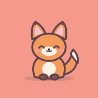
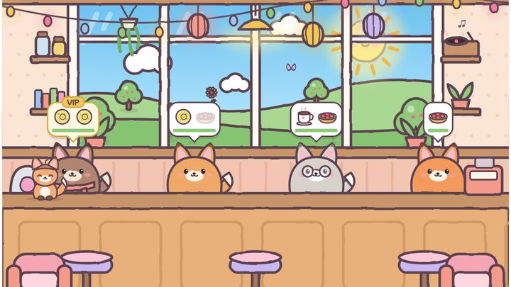
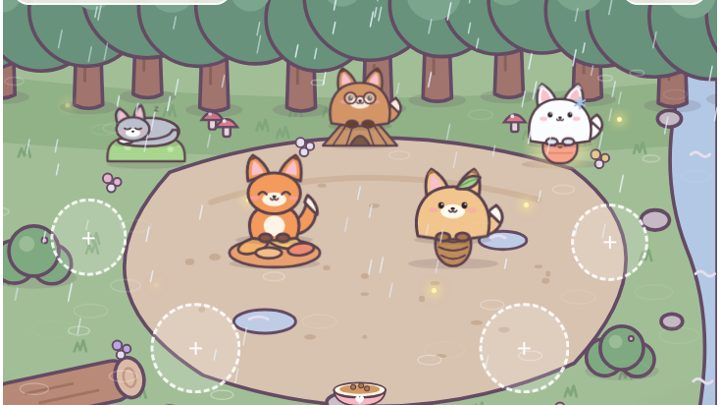

Kitsune Café
Un café tenu par des renards, et une clairière pour souffler.

Le caféSers les commandes avant que les clients s'impatientent, décroche tes étoiles et traverse les quatre saisons.

La clairièreLe soir, les clients du café suivent Roussette jusqu'à son refuge. Prends soin d'eux, et remplis la gamelle pour les renards sauvages.